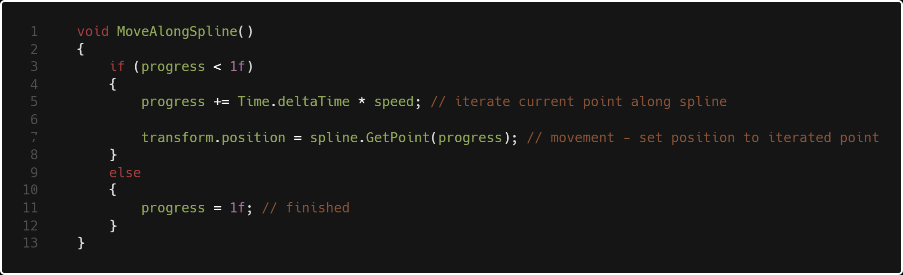
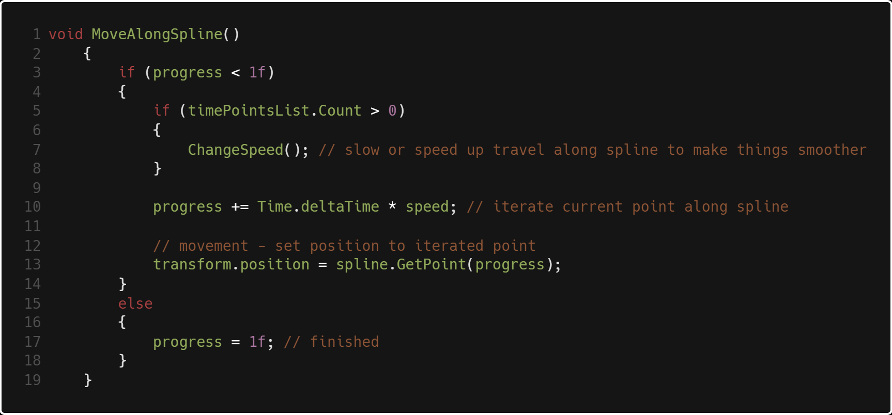
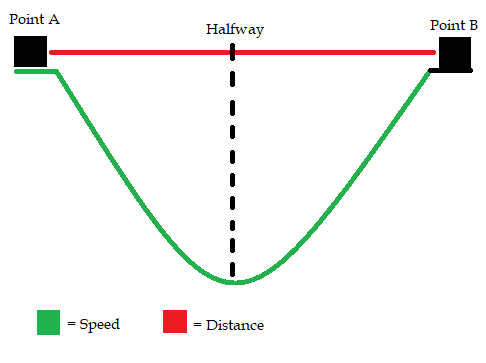

Custom Spline System

The Problem:
When studying the challenge of simulating flight in VR, it quickly became apparent that
our biggest challenge was going to be sim sickness. Many other VR experiences on the liminal
platform involve no movement at all, let alone flying. We were presented with many design
difficulties. Do we allow the player control of their movement? This was our biggest concern.
When the player is in control of their movement in VR, the problem space becomes exponentially larger.
What happens if the player collides with a wall? Do we add a force on them towards the opposite direction, (possibly increasing sim sickness)
or do we let them go through walls (breaking immersion)? When you look at the UX from the perspective
of it being an experience rather than a game, the answer becomes clear. It should feel like a roller coaster.
The goal for us was to provoke awe in the player, and the best way to do that in VR is for them to feel immersed,
to look around and feel like they are actually there in this world.
The Solution:
In Unreal Engine, there is a built in concept of a spline. In the past, I've had great problems
fixed in little time by having that spline. Sadly, There is no concept of a spline in Unity. After lots of
research and testing, I came across
this
tutorial on making a custom spline by Jasper at CatlikeCoding that seemed to solve our problem well.
After we had the ability to create a bezier spline and edit its points, it was time to figure out how to
get our paper airplane moving along that path. Out of the box, the tutorial spline gives us the power to
get a certain point anywhere along the spline and get the direction
which is the normalized first derivative at that point.

At it's simplest, this is all the code required to move an object along the spline.
progress is a float that equals a point along the spline between 0 and 1, with 0 being the start
and 1 being the end. So, spline.GetPoint(.2f) would return a point at 20% the length of the spline.
Progress is iterated by a speed, just as though you were moving a character with an input.
All we need to rotate the plane is a handy Unity function called transform.LookAt().
The location we need to look at in world space is the direction of the next point
with relation to our current position, so we add the two and get a Vector3 that our plane
will point it's forward vector towards. However, that does not account for Z rotation, since
we only need to rotate on two axes to do that. So, we pass through spline.GetDirection(progress)
as the up vector instead of Vector3.Up, and it rotates the Z for us as well.
Although those two short blocks of code is all we need to move our plane, it doesn't feel good.
The spline is very jerky, especially going around sharp turns. Flattening those curves out in the editor
isn't enough to be smooth enough for a sim sickness-less experience. Enter: Timepoints. Read more below.
Smoothed Movement
The Problem:
Through testing, we found that speed had a huge impact on motion sickness. If we could make those jerky turns along the spline
slower, we could greatly reduce the amount of sickness experienced. However, if the player is able to notice that they are slowing down
or speeding up, that increased the chance that they would feel sick. Thus, we need to slow the plane without it being noticeable.
The Solution: Time Points
To do this, I created a struct called TimePoints with 3 floats: point A, point B, and target speed.
when the plane was between these two specified points along the spline, the current speed would Mathf.Lerp towards
the target speed with an ease in and an ease out so that it's smooth.
This is all serialized so the designers can manipulate these time points
while testing to make things enjoyable. In this example, while the plane is within
34% and 47% the length of the spline, the speed will slow to 15 exactly halfway between those
two points, then smoothly speed up back to 20 by the time it reaches point B.

Here is my new MoveAlongSpline() method that incorporates a new function called ChangeSpeed(),
which is shown below.

Once we enter a set of time points, the first thing we have to do is SetLerpValuesAtPointA(). What this does is save
Time.time, our current speed, and where halfway is. That way, we have an accurate lerp and not a Dichotomy paradox.
Next, Until we are at the halfway mark, we LerpToHalfway(). What that does is Mathf.Lerp() our initial speed towards
our target speed by a value of t, where t = Time.time - lerpStartTime from SetLerpValuesAtPointA(). t is essentially a
timer that starts when we enter point A and ends at halfway.
After reaching halfway, we set our same values with SetLerpValuesAtHalfway, except we are setting the previously saved targetSpeed as initial speed.
After we set those values, we do the exact same lerp calculation as earlier but from targetSpeed towards initialSpeed. After we reach point B, we set our current
speed back to initialSpeed and iterate our timePoint index to the next value. Here's what those methods look like:

As we approach halfway, we slow to the target speed. After halfway, we speed to the initial speed.
The height of the parabola is the slowest we will be and is also at half the distance from point A to B.
Thus, time points have an ease in, ease out change of speed. The feedback we've recieved tells us that Timepoints
have a positive impact on negating motion sickness throughout the experience. The before and after is demonstrated below.
Without time points

With time points

Two sharp turns, one with time points and one without. If you pay attention to the left side of each GIF, which is the scene view, its very obvious
that the plane slows down with time points. But if you look at the right side - the game view, which is the perspective that the player takes,
its much less sharp of a slow
than it seems. And if you compare both right sides of each screen, its clear why the time points are necessary for avoiding sim sickness.